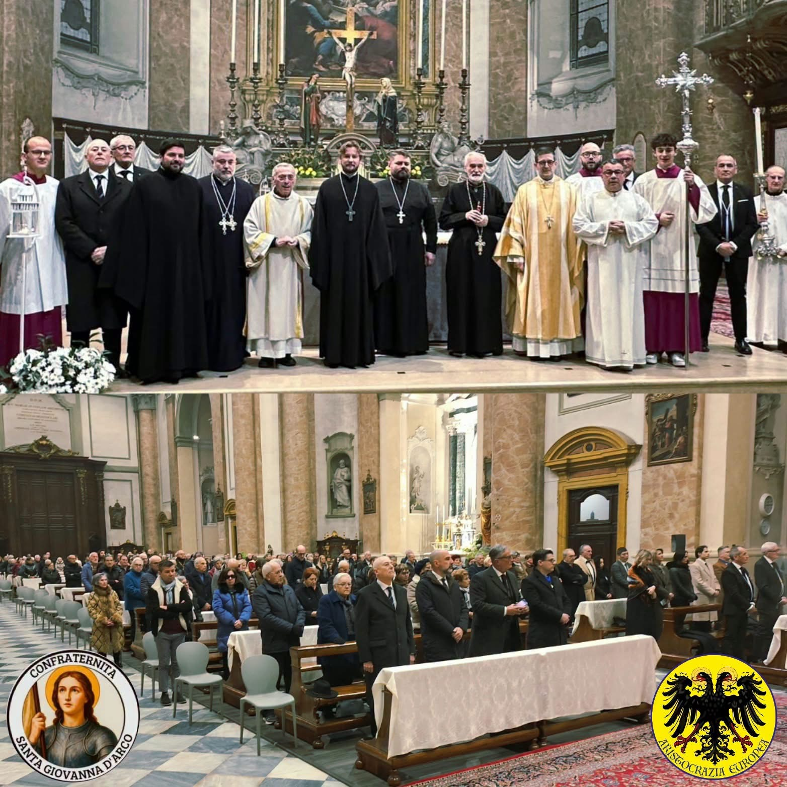

Aristocrazia Europea è una associazione culturale internazionale cristiana (ecumenica, apolitica e non a fini di lucro) fondata il 25 dicembre 2015, legalmente costituita e ufficialmente riconosciuta da Stato Italiano, Regione Lombardia, Unione Europea e Federazione Russa, che si occupa di storia, cultura e tradizioni (cavalleresche, nobiliari e araldiche), dimore storiche e arte, filosofia e metapolitica, alta formazione universitaria e beneficenza.
AE ha oltre 1200 associati (la metà italiani, oltre 300 iscritti sostenitori, fra i quali diversi principi, ecclesiastici, militari, diplomatici, docenti universitari, accademici, artisti, intellettuali, giornalisti, proprietari di dimore storiche).
Presidente (2025-2030) è l'avv. Cesare Vernarecci di Fossombrone, presidente emerito è il dott. Guido Farneti Merenda Salecchi, vice presidenti sono la dott. Lali Panchulidze e il dott. Carlo Alberto Biggini. Primo Cappellano Cattolico è Mons. Prof. Paolo Cartolari.
La sede legale e postale è attualmente presso lo studio legale del consocio Avv. Victor Jerkunica, in Via Lodovico Settala 2/N.1, zona Porta Venezia, 20124 Milano in Italia.
Segreteria aristocrazia.eu@gmail.com
Aristocrazia Europea

Eventi | Associazione Aristocrazia Europea
La Cavalleria Cristiana per l'Ecumenismo e la Pace
Duomo di Montichiari (BS), sabato 21 novembre 2026
UNA GIORNATA STORICA...

Dame e cavalieri cattolici del Pontificio Ordine di San Gregorio Magno, dell'Ordine Equestre del Santo Sepolcro di Gerusalemme, del Sovrano Militare Ordine di Malta (SMOM), del Sacro Ordine Costantiniano di San Giorgio (Real Casa Borbone), dell'Ordine dei Santi Maurizio e Lazzaro (Real Casa Savoia) e della Confraternita di San Jacopo di Compostella hanno pregato per l'unità dei cristiani e per la pace fra i popoli, insieme alle sorelle dame ed ai fratelli cavalieri di tradizione ortodossa dell'Ordine dei Santi Martiri principi David e Costantine duchi di Argveti (Real Casa Bagrationi), dell'Ordine del Drago (Casa Imperiale Andronik Cantacuzino), della Confraternita di San Giovanni di Gerusalemme e di Malta dedicata allo Zar Paolo I di Russia (Giovanniti Ortodossi), della Confraternita della Santa Croce di Georgia e della confraternita cristiana di rito orientale denomita Ordine Ecumenico Ortodosso di Gerusalemme (OEOH).
In occasione di questa inportante e sentita cerimonia, concelebrata dalle delegazioni sacerdotali cattolica e ortodossa, guidate rispettivamente da SE Monsignor Cesare Cancarini e da SE il Protosincello Padre Ambrogio Matsegora (Vicario Generale della Chiesa Ortodossa in Italia), il Duomo di Montichiari ha visto la convinta partecipazione di oltre quattrocento fedeli, fra questi anche autorità locali, civili, militari e diplomatiche.
Ad organizzare questa sobria e simbolica iniziativa ecumenica, di dialogo, condivisione e pace, è stata la Confraternita cavalleresca cattolica di Santa Giovanna d'Arco, dipendente dalla Diocesi di Brescia e guidata dal Priore Mauro Noventa, e la delegazione di Bergamo e Brescia dell'associazione culturale internazionale cristiana Aristocrazia Europea, rappresentata dal noto imprenditore locale, nobile Giovanni dei conti Alborghetti.
A concludere questa giornata di autentica fratellanza cavalleresca cristiana, vi è stata una elegante cena di beneficenza, presso la settecentesca villa dei conti Fenaroli. Fra la settantina di ospiti erano presenti anche Padre Adriano Frinchi, il barone Antonio Imperatore (delegato italiano del circolo culturale internazionale amici della Russia imperiale Terza Roma), il barone Roberto Jonghi Lavarini, il conte professore Giuseppe Manzoni di Chiosca e Poggiolo, Giovanni Trobetta del Centro Studi Multipolari R360, imprenditori e professionisti del territorio, esponenti politici del centrodestra della zona.
"Ringraziamo Giovanni Alborghetti per avere così bene organizzato questo alto evento culturale a sostegno del dialogo ecumenico e della pace in Ucraina e Medio Oriente. Iniziativa benemerita che ha visto, per la prima volta in Italia, una fraterna collaborazione fra gli appartenenti agli ordini cavallereschi legittimi, riconosciuti dal Vaticano e dalla Chiesa Ortodosa canonica." hanno dichiarato in una nota congiunta conclusiva il conte avvocato Cesare Vernarecci di Fossombrone (presidente di Aristocrazia Europea) e il principe professore Roberto Spreti Malmesi Griffo Focas di Cefalonia (presidente dell'Unione Bizantina, docente universitario e membro della Pontificia Accademia di Teologia).
Post Facebook 1 Video Facebook 1 Video Facebook 2 Post Facebook 2